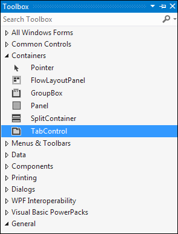
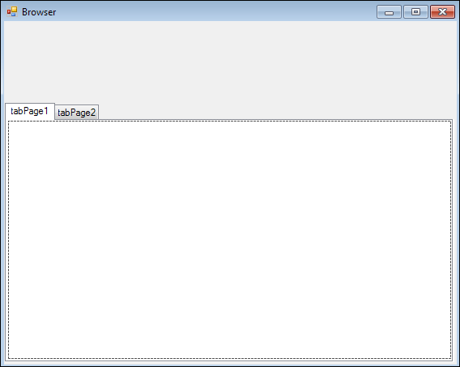
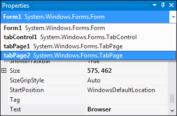

Build your own C# Custom Web Browser
In this section, we'll show you how to build your own custom browser in C# .NET.
Create a new project for this. Make your new Form nice and big. In the toolbox, locate the TabControl, which is under the Containers heading:

Add one to your form and resize it. Your form should then look like this:

The default TabControl gives you two tabs. We only want one, though.
To delete a tab, you can select it from the properties area on the right. Click the arrow on the drop down box. Locate tabPage2 and select it:

Now right click anywhere on tabPage2 except the tab header (where the TabPage2 text is). From the menu that appears, select the Delete option. If your whole TabControl disappears, click Edit > Undo from the menu bars at the top of the C# .NET software.
You should now have a TabControl with just one tab. Select this tab from the drop down box in the properties window. We'll add a browser to it in the next lesson.